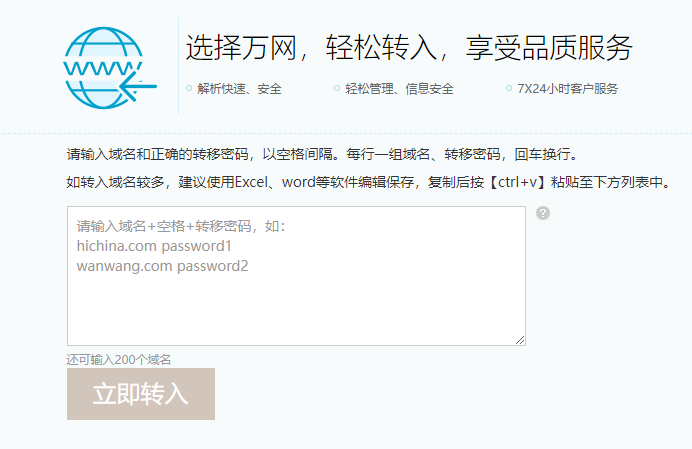

DNS registrar does not simply sell customer domain names, different registrars offer different features and pricing, e.g. Godaddy, Alibaba, Google etc, choosing a good reliable DNS registrar to host your precious company domain name is always a good idea. There are times when one needs to switch DNS registrar, e.g. change ownership of domain name, found a registrar with better pricing or better security. In this post I will go through the steps I took to transfer DNS domain name from Tencent cloud into Alibaba cloud, note not all domain types are supported, for example, Alicloud does not support .bio domain name tranfers yet.
Get transfer key from source cloud, in our case, follow instruction here. Note domain name often can’t be transferred if registered within past 60 days.
Type domain name and transfer key in destination DNS registrar (Alibaba cloud in our case) follow instruction here. 
Due to government regulations, all corporate domain names needs to go through background check before either initial registration or transfer. In our case one needs to register a information template (信息模板) before domain transfer. This check will normally take 1 to 3 business days.
Step 3 failed but the website did not give us a reason, it only shows Incomplete info on register(注册者资料不完整). So I tried to reach out to online customer service but it is always busy and recommends me to call +86-95187, however that number seems not reachable from US. Finally I managed to get in touch with customer service and figured out the reason is the business license picture did not show all 4 corners clearly, problem solved!